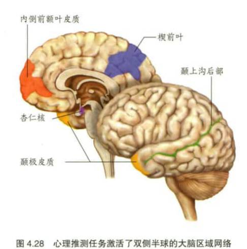

内侧前额叶与什么有关
高级记忆，负责加工与自我有关的信息
腹内侧前额叶皮质是预测我们心理状态的关键，当我们思考未来时，它越活跃，我们的决定就越不短视。
左侧前脑岛——前扣带皮质中部具有通道独立性的活动模式
右侧前脑岛——前扣带皮质中部具有通道依赖性的活动模式
孤独症谱系障碍的个体的默认网络在静息状态和任务状态之间不存在激活差异
在儿童期和青春期，社交隔离和社交游戏的缺乏会对神经元发育产生负面影响，导致社会行为缺陷，并持续到成年期
共情的知觉——行动模型
知觉另一个人的情绪状态会自动地激活观察者相同的心理状态，触发躯体和自主神经反应
颞上沟后部区域的活动与
眼睛注视方向的变化有关

孤独症患者镜像神经元网络的缺陷，导致他们无法将动作连接成动作链，进而导致他们无法理解动作的意图
experience sharing theory/经验分享理论
最初称为模拟理论（simulation theory）。这一理论认为，我们不需要对他人的思想有一个详尽的理论就能推断他人的思想或预测行为。我们只是观察别人的行为，模仿它，然后用我们自己的心理状态来预测他人的心理状态。比较心理状态归因理论（mental state attribution theory）。
imitative behavior /模仿行为
自发且不自主模仿他人的行为，可见于额叶损伤的病人。
joint attention /联合注意
通过观察一个人的眼睛注视方向或行动并对自己的注意做相似的引导来监控他人注意的能力。
mentalizing /心智化
参见心理推测（theory of mind）。
theory of mind (ToM) /心理推测(心理理论）
心理理论（theory of mind,TOM）是指个体对心理现象和心理状态的认识。开始理解自己所知道的也许与其他人不同。是把心理状态归因于自己和他人的能力
ToM
参见心理推测（theory of mind）。
default network / 默认网络
当一个人处于清醒的休息状态且不与外界接触时，大脑中活跃区域所组成的网络。
self-reference effect /自我参照效应
基于回忆受到初始信息加工深度影响理论的一种效应。具体来说，该效应指当信息的编码过程与自我高度相关时，记忆效果更好。
希金斯等人提出的自我参照效应（即自我关联效应），说明了自我图式在组织记忆内容方面的作用。他们发现，人们在加工与处理和自己有关的信息时效率更高，记忆效果也最好。
social cognitive neuroscience /社会认知神经科学
一个新兴的脑科学领域，将人格与社会心理学和认知神经科学相结合，以了解人类社会互动涉及的神经机制。
theory theory
参见心理状态归因理论（mental state attribution theory）。
anterograde amnesia / 顺行性遗忘症
丧失形成新记忆的能力。比较逆行性遗忘症 (retrograde amnesia).AP: 参见自视现象 (autoscopic phenomenon )。
autism spectrum disorder (ASD)/ 孤独症谱系障碍
一组神经发育障碍，包括孤独症、阿斯伯格综合征、儿童崩解症和未分类广泛性发育障碍。这些障碍均表现为社会认知和社会沟通缺陷，常伴有重复行为或强迫性兴趣。
BIID
参见他人肢体综合征 (xenomelia)。
body integrity identity disorder (BIID)/ 身体完整性认同障碍
参见他人肢体综合征 (xenomelia)。
empathic accuracy / 共情准确性
准确推断他人的想法、感受和 / 或情绪状态的能力。
ASD
参见孤独症谱系障碍 (autism spectrum disorder)。
autoscopic phenomenon (AP)/ 自视现象
一种影响全身的视觉性身体错觉。出体经验、自检幻觉和离体自窥症是自视现象的三种类型。
embodiment / 具身化
“自我” 与身体空间统一的感觉。
empathy / 共情
在已知自己和他人之间的区别时，能够体会和理解到别人感受的一种能力。共情通常被描述为 “设身处地” 的能力。
reversal learning /反向学习
使用与之前所学相反的方式做出反应。
xenomelia /他人肢体综合征
也称身体完整性认同障碍（body integrity identity disorder）。一种罕见的心理疾病，一些身体健全的病人报告，因为他们觉得某一个或某一些肢体不属于自己的身体，所以他们一生都有截除这个或这些肢体的愿望。
simulation theory /模拟理论
参见经验分享理论（experience sharing theory）。
false-belief task /错误信念任务
一种测量把错误信念归因到他人的能力的任务。
mental state attribution theory /心理状态归因理论
最初称为理论的理论（theory theory）。该理论提出我们会学习一种常识性的与科学理论有类似之处的“大众心理学”，并用之推测他人的思想（读心）。比较经验分享理论（experience sharing theory）。